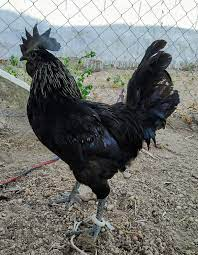
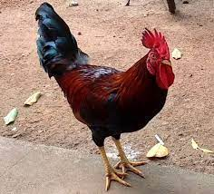

Poultry Breeds:
 Asils/Aseels: Asils were first used for cock fighting and may be considered fighting cocks.
The hens are not good layers, but are excellent sitters. Laying depends on the Asil variety, the small Asil are known to be very poor layers,
sometimes laying just 6 eggs a year, whereas larger Asil can lay around 40 eggs a year.
The Aseel breed is found in almost all states of India, but abundant in Andhra Pradesh and Tamil Nadu.
Asils/Aseels: Asils were first used for cock fighting and may be considered fighting cocks.
The hens are not good layers, but are excellent sitters. Laying depends on the Asil variety, the small Asil are known to be very poor layers,
sometimes laying just 6 eggs a year, whereas larger Asil can lay around 40 eggs a year.
The Aseel breed is found in almost all states of India, but abundant in Andhra Pradesh and Tamil Nadu.

Kadaknath: Kadaknath is an Indian breed of chicken. These birds are mostly bred by the rural poor, tribals and adivasis. There are three varieties: jet black, golden and pencilled.
The breed's meat has a fat content of nearly 1%. The Kadaknath is popular for its adaptability and its grey-black meat. They are poor setters and rarely hatch their own brood.

Gramapriya: Gramapriya is a breed of chicken developed by the Project Directorate on Poultry based in Hyderabad. The Gramapriya starts laying eggs at an age of 175 days. In 72 weeks a Gramapriya chicken can lay 200–225.
Gramapriya is a crossbred chicken developed by the Indian Government through a Hyderabad-based project under an All India Co-ordinated Research Project.
Gramapriya chickens have been developed for backyard rearing. They have a high favourability rating among farmers in India.